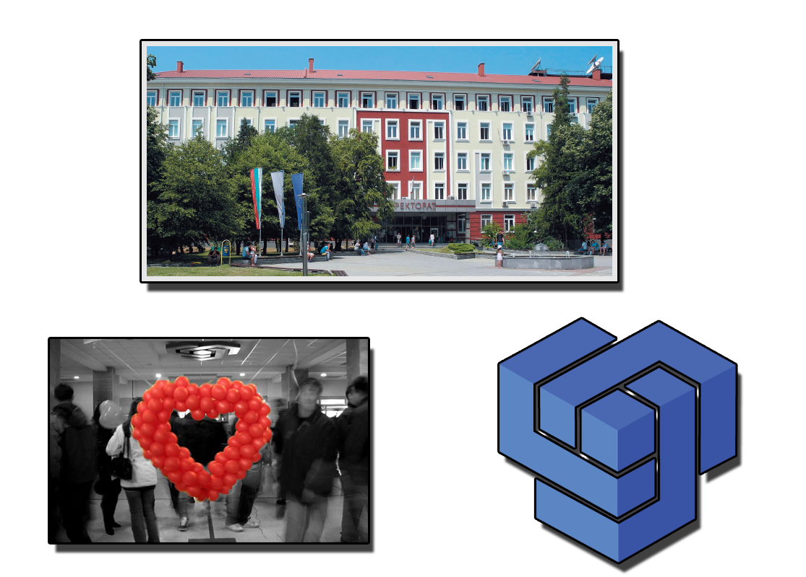

Technical Universiry of Sofia
|
 |
|
Excellent professors, excellent assistants, well presented lessons and exciting laboratory practices. Those are few, but most important aspects of my education in the Technical University of Sofia. While my education there I gain a lot f knowledge of how the telecom works. Not only I understood all of the processes needed for a data to be transferred from some place to another, but I was also intrduced to a lot of IT practices which are helping me already in my daily life. I am happy I chose that university.. |